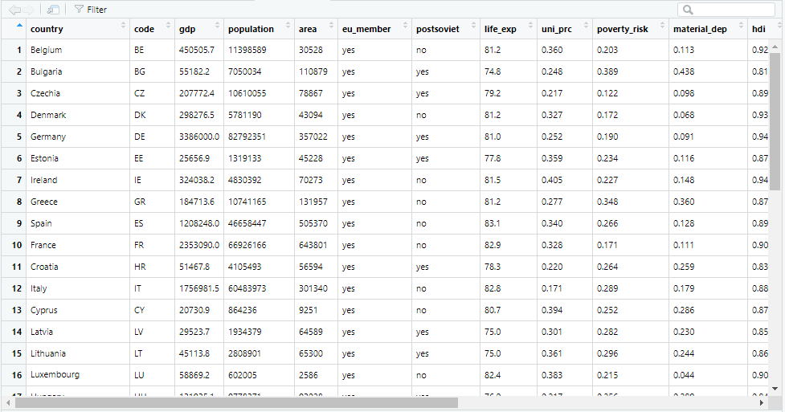

library(tidyverse) # tidyverse bude od teď standardem naší práce.
countries <- read_csv("data-raw/countries.csv")9 První pohled na dataframe
Dataframe je zdaleka nejběžnější objekt pro uchovávání dat v R a tato kapitola je proto věnována právě jim. Pracovat budeme s dataframem countries:
9.1 Pohled na dataframe
Jako první je dobré se ujistit, že data byla importována správně. Dataframe je možné si prohlédnout pomocí View() (pozor, s velkým V!):
View(countries)
View() zobrazí dataframe v novém interaktivním okně, pomocí kterého lze zkontrolovat, jestli byla data nahrána správně, jestli jsou proměnné správně pojmenované a všechen text se zobrazuje bez problémů. U větších dat může být ovšem funkce být poněkud pomalá. Lepší je proto podívat se pouze na výsek dat. Funkce head() umožňuje zobrazit několik prvních řádků dataframu (a analogicky funkce tail() zobrazí poslední řádky):
head(countries, n = 3)# A tibble: 3 × 17
country code gdp popula…¹ area eu_me…² posts…³ life_…⁴ uni_prc pover…⁵
<chr> <chr> <dbl> <dbl> <dbl> <chr> <chr> <dbl> <dbl> <dbl>
1 Belgium BE 450506. 11398589 30528 yes no 81.2 0.36 0.203
2 Bulgaria BG 55182. 7050034 110879 yes yes 74.8 0.248 0.389
3 Czechia CZ 207772. 10610055 78867 yes yes 79.2 0.217 0.122
# … with 7 more variables: material_dep <dbl>, hdi <dbl>,
# foundation_date <date>, maj_belief <chr>, dem_index <dbl>, di_cat <chr>,
# hd_title_name <chr>, and abbreviated variable names ¹population,
# ²eu_member, ³postsoviet, ⁴life_exp, ⁵poverty_riskPoslední možností je vytisknout dataframe přímo do konzole, což však s vyjímkou velmi malých dat není příliš přehledné.
9.2 Sumarizace dataframu
Balíček dplyr z Tidyverse nabízí o něco kompaktnější funkci pro prohlédnutí našich dat, glimpse():
glimpse(countries)Rows: 38
Columns: 17
$ country <chr> "Belgium", "Bulgaria", "Czechia", "Denmark", "Germany"…
$ code <chr> "BE", "BG", "CZ", "DK", "DE", "EE", "IE", "GR", "ES", …
$ gdp <dbl> 450505.7, 55182.2, 207772.4, 298276.5, 3386000.0, 2565…
$ population <dbl> 11398589, 7050034, 10610055, 5781190, 82792351, 131913…
$ area <dbl> 30528, 110879, 78867, 43094, 357022, 45228, 70273, 131…
$ eu_member <chr> "yes", "yes", "yes", "yes", "yes", "yes", "yes", "yes"…
$ postsoviet <chr> "no", "yes", "yes", "no", "yes", "yes", "no", "no", "n…
$ life_exp <dbl> 81.2, 74.8, 79.2, 81.2, 81.0, 77.8, 81.5, 81.2, 83.1, …
$ uni_prc <dbl> 0.360, 0.248, 0.217, 0.327, 0.252, 0.359, 0.405, 0.277…
$ poverty_risk <dbl> 0.203, 0.389, 0.122, 0.172, 0.190, 0.234, 0.227, 0.348…
$ material_dep <dbl> 0.113, 0.438, 0.098, 0.068, 0.091, 0.116, 0.148, 0.360…
$ hdi <dbl> 0.92, 0.81, 0.89, 0.93, 0.94, 0.87, 0.94, 0.87, 0.89, …
$ foundation_date <date> 1831-07-21, 1989-11-10, 1993-01-01, 2053-05-19, 1949-…
$ maj_belief <chr> "catholic", "orthodox", "nonbelief", "protestantism", …
$ dem_index <dbl> 7.78, 7.03, 7.69, 9.22, 8.68, 7.97, 9.15, 7.29, 8.08, …
$ di_cat <chr> "Flawed democracy", "Flawed democracy", "Flawed democr…
$ hd_title_name <chr> "King - Philippe", "President - Rumen Radev", "Preside…Alternativní možností je generická funkce summary():
summary(countries) country code gdp population
Length:38 Length:38 Min. : 10735 Min. : 38114
Class :character Class :character 1st Qu.: 43947 1st Qu.: 2075301
Mode :character Mode :character Median : 201612 Median : 7001444
Mean : 484601 Mean :16754743
3rd Qu.: 458715 3rd Qu.:11398589
Max. :3386000 Max. :82792351
NA's :3 NA's :1
area eu_member postsoviet life_exp
Min. : 160 Length:38 Length:38 Min. :74.80
1st Qu.: 41344 Class :character Class :character 1st Qu.:76.80
Median : 73874 Mode :character Mode :character Median :81.00
Mean :156019 Mean :79.58
3rd Qu.:242305 3rd Qu.:81.60
Max. :783562 Max. :83.30
NA's :1
uni_prc poverty_risk material_dep hdi
Min. :0.1550 Min. :0.1220 Min. :0.0420 Min. :0.7600
1st Qu.:0.2200 1st Qu.:0.1770 1st Qu.:0.0820 1st Qu.:0.8425
Median :0.3010 Median :0.2200 Median :0.1280 Median :0.8800
Mean :0.2915 Mean :0.2403 Mean :0.1799 Mean :0.8739
3rd Qu.:0.3630 3rd Qu.:0.2820 3rd Qu.:0.2590 3rd Qu.:0.9200
Max. :0.4050 Max. :0.4160 Max. :0.4810 Max. :0.9500
NA's :3 NA's :5 NA's :5
foundation_date maj_belief dem_index di_cat
Min. :1291-08-01 Length:38 Min. :4.370 Length:38
1st Qu.:1919-11-11 Class :character 1st Qu.:6.670 Class :character
Median :1975-06-01 Mode :character Median :7.710 Mode :character
Mean :1930-10-08 Mean :7.639
3rd Qu.:1991-08-28 3rd Qu.:8.680
Max. :2053-05-19 Max. :9.870
NA's :1
hd_title_name
Length:38
Class :character
Mode :character
V některých případech nepotřebujeme prohlížet celý dataframe. Pokud si nejsme jistí, jak se jmenují proměnné v našem dataframu, pomůžeme nám funkce names():
names(countries) [1] "country" "code" "gdp" "population"
[5] "area" "eu_member" "postsoviet" "life_exp"
[9] "uni_prc" "poverty_risk" "material_dep" "hdi"
[13] "foundation_date" "maj_belief" "dem_index" "di_cat"
[17] "hd_title_name" Celkový počet proměných lze zjistit pomocí funkce ncol(), případně length(), pro kontrolu počtu řádků potom příbuzná nrow():
ncol(countries)[1] 17nrow(countries)[1] 38